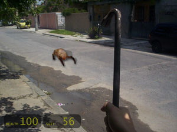
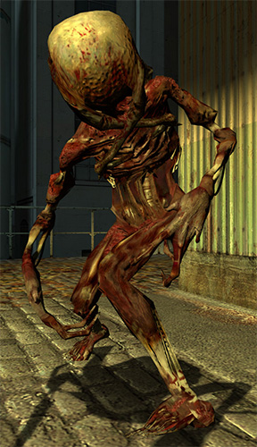
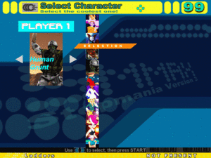

Half-Life
 De: La Frikipedia, la enciclopedia extremadamente seria.
De: La Frikipedia, la enciclopedia extremadamente seria.
De la serie Videojuegos:
Half-Life

Las mutaciones por la radiacion pueden causar grandes problemas en la apariencia.
| Desarrollado por:
|
VALVa y Nihilanth
|
| Distribuido por:
|
Steam, batallando a los piratas.
|
| Diseñado por:
|
Gabe Newell, el aficionado a las patatas fritas.
|
| Motor
|
GoldSrc., un total plagio del motor Quake, pero cambiado.
|
| Género(s)
|
Acción en primera persona, ciencia ficción y frikadas.
|
| Fecha de lanzamiento:
|
las 24hs. 31 de diciembre 1999 y está en Steam desde 11 de septiembre de 2001.
|
| Modos de juego:
|
Singul Pleier y MultiPleier.
|
| Requisitos:
|
2MB de RAM, una tarjeta de video 3D, lo esencial.
|
| Disponible en:
|
Steam, el cybercafé del chino, tu madre.
|
| Formatos:
|
PC, Dreamcast, Play Station 2 y X-Box.
|
| Edades:
|
+2.
|
| Puntuaciones:
|
100 puntos, nominado el juego del año (para aquéeeeella época, claro) por mas de 50 publicaciones.
|
Los gráficos hacen del juego algo muy
friki.
«Gordon Freeman...»
~ La profesora del colegio tomando asistencia a Gordon Freeman
«...»
~ Gordon Freeman diciendo presente
«Estoy herido pero creo que puedo seguir»
~ Científico tras ser disparado varias veces por Freeman
«Hoy es un gran día, Freeman»
~ Científico veinte minutos antes del desastre
Half-Life es un videojuego de acción en primera persona, de ciencia ficción, que trata las aventuras de Gordon Freeman, un fisico que se quedo mudo desde que paso por un rio y un tal Edgar se le cayo encima. Luego de que este participara de un experimento en Black Mesa, ocurrio una hecatombe de proporciones biblicas tras lo que tiene que ir a los laboratorios Lambda para ver si los frikis de ahi hallaban la solucion.
Historia
Vease Anexo:Historia de Half-Life.
Versión más corta

Peligroso Alien al que tiene que enfrentarse Gordo
(Nota importante: A continuación se revelaran acontecimientos importantes del juego, por lo que te recomendamos que si no quieres enterarte, cierra la ventana o tápate los ojos)
Un buen día llegó la oportunidad que El Santo Grial y esa maquina era la forma de descifrarlos. Estaban muy equivocados ya que dichas piedras servian de enlace o hipervinculo entre la tierra y Xen por lo que cuando E.T. Cuando Gordo Volvio de su viaje interespacial (Al estilo de la pelicula Contact) vio la camara de pruebas echa añicos, los cientificos estaban fiambre y por si fuera poco unos extraños bichos habian aparecido por toda la base. Gordo decide primeramente subir a la superficie a buscar ayuda, por el camino tendra que hacer frente a cerdos de un solo ojo con muy mala leche, sapos sin cabeza y con garras que se aparean con las cabezas humanas, cientificos transformados en zombis, como resultado del apareamiento de uno de esos sapos con su cabeza, extraños hongos carnivoros pegados al techo que te atrapan con su lengua (cuando los veas mas de una vez miraras al techo al entrar en una habitacion). Y montones de criaturas entre los vortigaunts antes nombrados.
Al llegar a la superficie Gordo encuentra a un equipo de soldados que creia que venia a rescatarlos pero en realidad estos tipos solo venian a tapar "un poco" el accidente volandoles la cabeza a los cientificos y echando abajo todo el complejo. Pero Gordo no estaba dispuesto a dejarse cojer despues de todo lo que tuvo que pasar para subir. Asi que huyo hasta el complejo denominado lambda (no bangrha). Alli le explicaron que tenia que viajar a Xen y matar a la evolución de E.T (Nihilant) antes de que enviara a su ejercito y se apoderara del mundo. Gordo viaja a Xen y acaba con Nihilant, cuando realizó su azaña pensó (si, si muy bien, he acabado con el malo pero, ¿Cómo XXXX vuelvo? En ese momento apareció sin venir a cuento un hombre trajeado al estilo Men&Black que Gordo pudo ver en varias ocasiones durante su periplo por Black Mesa. El Hombre le da la enhorabueha (no era para menos) por su trabajo y le ofrece un puesto en su empresa (En half life 2 nos enteraremos de que se trata) o por el contrario una muerte segura a manos de los hijos de la evolución de E.T.
Al no tener elección Gordo acepto la oferta y permaneció durante 15 años encerrado en una habitación sin luz mientras en el mundo, los habitantes de la Tierra tuvieron que hacer frente a una invasión alienigena comandada por Yupi pero eso es ya otra historia.
Enemigos
Headcrabs
 !Ven perrito, perrito, perrito¡
Son una especie de sapo gigante, sin ojos ni boca, con patas muy largas y un tremendo orificio anal que le sirve para aparearse con las cabezas de las personas. De la Union entre una cabeza y un headcrab sale un zombie. Gman los usa para mantener relaciones sexuales jugar al teto.
Zombie
 Zombie tras el apareamiento de un Headcrabs
Tras el apareamiento de un headcrab y una cabeza humana sale un zombie. Son todos iguales (bata blanca, pecho abierto donde se le ven toas las tripas y unas manos que no tienen nada que envidiarle a las de eduardo manostijeras). Les gusta hacerse el muerto para asustar a todo el que pasa por su lado. Tienen una mala leche de cojones pero un par de tiros en su cabeza de sapo y no tendran nada que hacer. Siempre emiten gemidos (y claro, seguro que el headcrab les succiona el cerebro) y tienen dos formas de arañarte: doble arañazo y arañazo con una mano.
Barnacle
Es como una mezcla entre un moco mutante, una planta carnivora y un camaleon, con algun toque de murcielago (ya que gusta de dejarse recolgar del techo en lugares altos y oscuros). A simple vista puede parecer un hongo enorme que ha crecido del techo pero hay que tener cuidado, porque dejara caer su lengua sobre ti y te atrapará para comerte (debajo de esa fea y asquerosa piel esconde unos dentarros tremendos) pero bastará solo un par de tiros o un escopetazo para causarle una indigestión.
Loa jugadores veteranos fardan dejándose subir por su lengua hasta estar a medio metro de su bocaza y se lo cargan enonces con la palanca, volviendo a caer sobre algo que amortigue. Ojo: no te estamos sugiriendo que lo intentes ya que para ser veterano hay que tener un par de huevos horas libres con el fin de pulir esos nervios de acero.
Houndeye
Es como un perro grande, de tres patas y de color verde, con un venticatorce ojos enfrente. Tiene muy malas pulgas y si se te acerca no será para jugar contigo, ya que tira unos pedazos gritos que te pueden dejar seco, así que es mejor tener cuidado.
Bullsquid
Es una lagartija gigante con grandes colmillos cuyo ataque consiste en tirarte vómitos(después de un peazo peo que se cojio en el botellón) a distancia o morderte.
Wombat
Aunque no nos tendremos que enfrentar a ellos directamente (menos mal) se piensa que son los que arrastran los cuerpos de los cientificos por los agujeros y conductos de ventilación para follárselos hasta cansarse Dios sabe que perversión.
Gargantúa
Mounstro gigante cabrón de color azul que aplasta todo lo que se lleva por delante. Su ojo brilla en la oscuridad porque tiene visión infrarroja. Cuando abre sus manos te tira un fuego que bien te quema el culo. A veces da un pisotón en el suelo, haciando salir unas luces brillantes que van hacia tí y te matan. Este bicho tiene un tamaño de mastodonte, así por lo general si te acercas (aunque no cualquiera tiene cojones de acercarse a esta cosa) te pisa con sus grandes piés.
El único método de matarlo es usando algo del entorno, como por ejemplo activar raíles eléctricos cuando el bicho los pisa, o bien vaciarle una paletada del lanzamisiles en la cara.
Los tres tentáculos del pozo
Este curioso enemigo formado por tres pinzas/tentáculos/lo que sean mora en un pozo debajo de un misil en una misión. Lógicamente, el mejor modo de cargárselo es activar el misil, y para ello hay que pasar a su alrededor y por tanto a su alcance.
Aunque este método sea largo y penoso, Chuck Norris consiguió matarlo usando la palanca. Si no eres él, no intentes hacerlo, avisado quedas.
NOTA: Perdonen al fumado de que escribió esa parte, en realidad Él lo mató con los puños.
Gonarch
Enorme araña de cuatro patas (parecida a los headcrabs, pero con un enorme testículo en medio). Tiene hijos a cada momento, por lo que a veces lanza pequeñas arañitas (los headcrabs bebés) que bien estos cabroncetes te gastan todos los tiros. También te tira semen que te impacta en la cara y te deja desfigurao. Cuando te acercas te pega una patá de burro que te manda volando a la coña en el fin del mundo.
Su nombre, Gonarch, viene de Gonad y Monarch, lo que en inglés sería El Rey de los Cojones.
Nihilant
Cabezón volador gigante que te tira electricidad sirviéndose de la energía de unos picos de vidrio brillantes en la pared (cuando destruyes los vidrios se queda medio indefenso y solo puede teletransportarte a otro lado). Si le disparas en el cráneo, su cabeza se abre como pétalos y puedes aprovechar para reventarle el cerebro.
Curiosidades sobre Half Life
 Los personajes del Half-Life son tan famosos que hasta aparecen en otros juegos
Sobre Gordo
La razón de por qué es mudo y no se refleja en los espejos es desconocida(puede que sea un vampiro al que le hayan cortado la lengua). Tras el accidente presenta una gran habilidad en el uso de todo tipo de armas, asi como para subir escaleras sin manos, y un carácter violento hacia los demás (tanto colegas como enemigos). Su principal pasatiempo es abrirle la cabeza a los guardias con su palanca roja para robarles sus pistolas. Se piensa que puede estar casado y tener un hijo.Al final se va a La Zona y muere por una anomalía Electro en S.T.A.L.K.E.R. Shadow Of Chernobyl.Antes de eso cambio su palanqueta por una lata de comida.
143 cosas sobre el y su palanca
- 1. La palanca de Gordon Freeman es sagrada. Si la tocas, sufrirás el síndrome de fragmentación craneana palanquística.
- 2. Gordon Freeman nació sabiendo.
- 3. Dicen que Gordon Freeman es Einstein con escopeta y palanca. ERROR, Gordon es más inteligente que Einstein.
- 4. Un día, Gordon Freeman tiró su palanca a un vacío, y ésta volvió a su mano.
- 5. La madre de Gordon es su palanca, la cual creó.
- 6. Sea el panorama que sea, Gordon Freeman no frunce el ceño ni sonríe, no le importa nada.
- 7. Gordon Freeman es el único capaz de pegar 20392039209 palancazos por segundo.
- 8. Todos los que le dijeron "Gordo Hombrelibre" a Gordon Freeman, sufrieron un palancazo. Por eso G-Man no lo espía muy seguido.
- 9. El IQ de Gordon Freeman es 23029302930923238467589732038492384.
- 10. Si Gordon Freeman quiere, Steven Hawking es capaz de levantarse de su silla para arrodillársele.
- 11. Cuando Gordon Freeman tiene que forzar una puerta para entrar usa una llave(la palanca es solo para forzar cabezas).
- 12. Los que no son amigos de Gordon sufren un palancazo.
- 13. Gordon Freeman tuvo relaciones con la tía buena de HL2 con sólo mirarle abajo.
- 14. Gordon Freeman usa su palanca para tener sexo.
- 15. Todavía no termina la apuesta entre Gordon Freeman y este chaval sobre quién puede contenerse y estar más tiempo sin decir nada.
- 16. Alguien usó la palanca de Gordon Freeman para rascarse la espalda, pero mejor que Gordon le eche una mano...
- 17. Gordon tiene una foto en su oficina diciendo que es empleado del mes, cuando apenas si comienza su primer día de trabajo.
- 18. Gordon predice el futuro a base de ecuaciones que escribe en su espalda mientras hace bunny jumping.
- 19. Gordon Freeman duerme con los anteojos puestos.
- 20. Gordon Freeman hizo un análisis crítico de Ran Ran Ru.
- 21. Gordon Freeman abusó sexualmente de la niña que aparece en el vídeo de "La Llamada", por eso no es la misma...
- 22. La palanca de Gordon Freeman sirve para volar.
- 23. Gordon Freeman golpea con su palanca, y su palanca golpea con otro Gordon Freeman y así sucesivamente.
- 24. A Gordon Freeman le hacen caso sin que diga nada.
- 25. Gordon Freeman puede ser de dos bandos en GTA 3 San Andreas. Y llevar 50 acompañantes en un auto para dos.
- 26. En GTA 3, Gordon Freeman puede reventar un tanque a golpes, porque hacerlo con el bat es demasiado fácil.
- 27. Gordon Freeman jugó a Half-Life.
- 28. Gordon Freeman jugó a que era Adrian Shephard, en una pesadilla de Barney Calhoun.
- 29. Gordon Freeman puede pulsar un botón sin usar las manos.
- 30. Gordon Freeman es capaz de subir una escalera corriendo, de espalda, más fusil que se levanta con las dos manos
- 31. Gordon Freeman se baña con el traje de protección puesto.
- 32. Gordon Freeman puede guardar 16 armas o más en su pequeño bolsillo.
- 33. La totalidad de todas las armas de Gordon Freeman pesan alrededor de 1000kg.
- 34. El traje de Gordon Freeman lleva baño portátil.
- 35. Gordon Freeman no se puede ver a sí mismo en un espejo ni observar sus pies porque su imagen tiene miedo de ser vista por él.
- 36. La palanaca de Gordon Freeman es roja debido a que la usa para matar.
- 37. Gordon Freeman no respeta a nadie. Lo más cercano que puede hacer es dejarte la mitad del cerebro.
- 38. Algún vigoroso pensador incluyó el palíndromo nogordodrogon, hoy conocido como Steven Hawking, quien quedó tetraplégico. Sobrevivió a razón de que Gordon le
pegó con la palanca al revés.
- 39. Gordon Freeman ingresó a la historieta de este vikingo. Como resultado, el vikingo es enano y la historieta, ya no la misma...
- 40. Gordon Freeman puede subir una escalera de mano con sólo mirar hacia arriba y avanzar.
- 41. Aún con el peso del traje, Gordon Freeman ganó el Concurso de Correr de Marines Asesinos a un negro africano.
- 42. Gordon Freeman pasó ENTERO Half-Life en medio minuto con sus expansiones y secuelas al mismo tiempo sin windowed.
- 43. Uno de los pasatiempos favoritos de Gordon, es ver sufrir a los demás.
- 44. Otro pasatiempo de Gordon Freeman consiste en abrirle la cabeza a los guardas de un palancazo (aunque tengan casco) para robarles sus pistolitas.
- 45. Para pedir algo prestado, Gordon Freeman necesita una palanca de acero y alguien que esté de espaldas...
- 46. Gordon Freeman nació con el traje.
- 47. Gordon Freeman desvió el avión para que choque con las Torres Gemelas.
- 48. Arrojó su palanca tan lejos de manera que paró a la cabeza del piloto. Y el copiloto.
- 49. Gordon Freeman descubrió el código del Santo Grial. Lástima que jamás haya hablado...
- 50. La palanca de Gordon es roja por la sangre de sus enemigos.
- 51. El que inventó un videojuego llamado "Codename Gordon" recibió un palancazo. Gordon Freeman no es asesino a sueldo.
- 52. Un tío en Dragon Ball podia romper 64 cerámicas de un golpe. Gordon Freeman rompió 64 zombis de un palancazo.
- 53. La vida de Gordon Freeman es una de las pocas que tiene sentido, el resto no.
- 54. Un día Gordon se detuvo a pensar porqué daba de palancazos a todo el mundo, mientras mataba a su amigo.
- 55. La razón por la que se escucha un ruido cuando Gordo se acerca a la radiación, es porque se comió un Contador Geiger el año pasado.
- 56. Gordon Freeman tardó medio minuto en escapar de Black Mesa, matando a todos los de la instalación.
- 57. A Gordon Freeman le llevaron 2 segundos derrotar a Nihilant.
- 58. Gordon Freeman se hace planteos existenciales mientras pega palancazos, esquiva balas, mata, etc.
- 59. Gordon Freeman tiene un súper estómago cybertrónico propio de su traje.
- 60. El mejor escondite de Gordon Freeman es el interior de su propio traje.
- 61. Freeman sabe de que se tratará Half-Life 2:Episodio Tres.
- 62. La multitarea de Gordon consiste en leer el libro de Física Nuclear III mientras pega palancazos, salta y corre.
- 63. El "Traje" de Gordon no es simplemente una vestimenta. Es parte de él.
- 64. Un fulano pudo reirse de Gordon. Pudo.
- 65. Desde que Gordon Freeman llegó a Black Mesa, no dijo ni una puta palabra. Salvó a la humanidad. Saquen sus conclusiones.
- 66. Gordon Freeman sabe porqué G-Man tiene un maletín pegado a la mano. Y sabe qué tiene dentro.
- 67. Gordon Freeman sabe quien es el responsable del incidente de Black Mesa.
- 68. Gordon Freeman conoce el principio y el fin del Universo y el Todo.
- 69. Gordon Freeman pegó un palancazo a un violín. Inventó el sonido
- 70. Gordon Freeman rozó su palanca y le encendió fuego. Generó un gran incendio en Chicago.
- 71. Durante las partidas de Tenis, al primer tiro de Gordon Freeman la puntuación es 15-0 (15 muertos por palancazos).
- 72. La apertura del portal hacia Xen sucedió cuando Bender intentó doblar la palanca de Gordon Freeman.
- 73. Gordon Freeman es un palancazo de G-Man, quiere decir que G-Man es una especie de Gordon Freeman. G-Man es un palancazo
de Gordon Freeman. ¡¡¡¡¡¡¿¿¿¿¿Quiere decir, entonces, que Gordon Freeman es una especie de Gordon Freeman????????!!!!!!!!!!!
- 74. El alma de Gordon Freeman reside en su palanca (Ah, con razón no puede separarse de ésta).
- 75. Gordon Freeman puede matar a G-Man. Pero lo deja vivir porque le parece simpático.
- 76. Gordon Freeman es hermano gemelo de Dr.House y compiten a muerte sobre quién se queda con el premio nobel de la ciencia...
- 77. Gordon Freeman hizo una carrera en picada con el Dr.House, desde entonces el mencionado doctor quedó cojo.
- 78. El bastón del doctor House fué bendecido con agua bendita, desde entonces, trata de igualar los poderes de la palanca de Gordon.
- 79. Gordon deja su palanca en un vaso de agua antes de dormir.
- 80. Cuando alguien intenta profanar a Gordon mientras duerme, la palanca sale del vaso por sí sola y mata al profanador.
- 81. Cuando Gordon Freeman tiene sed, come sal.
- 82. Cuando Gordon Freeman tiene sed, toma lava.
- 83. Gordon Freeman puede tomar limonada con sal.
- 84. Gordon Freeman usa su palanca para revolver su jugo de frutas.
- 85. Gordon Freeman inventó a Clint Eastwood con un pelo de su barba mientras llevaba sombrero. Ese pelo en sus primeros pasos, protagonizó el documental denominado "Douglas".
- 86. Gordon Freeman le enseñó reglas físicas a Einstein.
- 87. Luego fue a por Stephen Hawking. Pero como no estaba de acuerdo con lo que Gordon dijo sobre los electrones, bueno, ya
sabemos el resto...
- 88. Gordon Freeman puede traducir números hexadecimales a kanjis porque hacerlo a hiraganas es demasiado fácil.
- 89. Gordon Freeman hizo el script de sombras dinámicas de Doom 3 con la calculadora, porque hacerlo con el notepad era demasiado fácil.
- 90. Se cree que el cuerpo de Gordon Freeman está muerto, pero las bacterias no tienen cojones de comerlo.
- 91. Gordon Freeman dejó un trozo de carne humana en un manicomio. Inventó el canibalismo.
- 92. Gordon Freeman jamás se tiró una flatulencia en su vida ya que podría estropear el traje.
- 93. Gordon Freeman no habla ni aunque Jack Bauer lo torture. Los últimos que le oyeron hablar aparecen en el documental "Los 4400".
- 94. Gordon Freeman torturó a Jack Bauer para que le revele porqué está siendo torturado.
- 95. Gordon Freeman no envía archivos de ordenador a la papelera de reciclaje. Le basta pegarles palancazos para eliminarlos.
- 96. Existen muchos tipos de energías, entre ellas, la energía palanquenética, solo se produce durante un asesinato.
- 97. Gordon Freeman se mete a un pozo lleno de zombies armado con sólo una palanca sin que le pase nada.
- 98. Gordon Freeman esquivó un meteorito, impulsándose para escapar con una lata de gaseosa.
- 99. Gordon Freeman puede imitar a la perfección la voz de Loquendo.
- 100. Gordon Freeman sale a matar gente todos los días, tardes y noches.
- 101. Gordon Freeman te puede matar ayer.
- 102. La palanca de Gordon Freeman puede cortar atravez de la materia y el tiempo.
- 103. Gordon Freeman orina nitroglicerina cada vez que bebe una botella de rón.
- 104. Normalmente, un palancazo de Gordon produce un impacto importante al espacio tiempo. No sólo al medio-ambiente.
- 105. Gordon Freeman nunca se ha tentado para comer un pastel entero de cumpleaños. Los tragaba.
- 106. Gordon Freeman no necesita respirar, simplemente porque el aire tiene mucho miedo de entrar en su cuerpo.
- 107. Gordon Freeman nos comerá a todos, de hecho podría ser que se coma al Universo (a excepción de su propia existencia, claro).
- 108. Gordon Freeman jamás ha necesitado estudiar, porque inventó la ciencia.
- 109. Gordon Freeman nunca se cambiará de nombre porque ningún tipo se ha atrevido a burlarse.
- 110. Gordon Freeman sale por las noches para comerse a los zombies y a los niños.
- 111. Gordon Freeman puede pegar un escopetazo a los piés de alguien para hacerle volar la cabeza.
- 112. Gordon Freeman tiene la entera colección de animales actuales y prehistoricos disecados (algunos comidos) por su palanca.
- 113. Gordon Freeman lleva su apellido para decir al mundo que es un hombre libre y que puede hacer con la gente lo que le sale de los huevos.
- 114. El Profesor Utonio tomó una muestra de diarrea de Gordon Freeman para poder analizarla y finalmente descubrir la Sustancia X.
- 115. Gordon Freeman jamás ha chocado un coche por Liberty City mientras conducia en contramano por la autopista.
- 116. Gordon Freeman arroja piedras a los coches de carretera para que exploten.
- 117. Gordon Freeman fue administrador en Wikipedia y decidió borrar todos los articulos durante varias semanas y nadie se atrevió a bloquearlo.
- 118. Gordon Freeman se encontró con una entidad maligna en un bosque oscuro, luego el fantasma desapareció, pues tuvo miedo, ya que Gordon lo miraba amenazante con su palanca.
- 119. Gordon Freeman utiliza anteojos para evitar su mirada asesina. Sólo se los sacó una vez, cuando ocurrió el desastre de Hiroshima.
- 120. Los Simpsons son amarillos porque Gordon le robó varios crayones a Matt Groening.
- 121.Gordon Freeman mandó a hacer sus anteojos en una fundidora.
- 122. Gordon Freeman puede cruzar una autopista con tránsito (en hora pico) caminando despreocupado, sin mirar y sin que le pase nada.
- 123. Gordon Freeman creó a la ONU, con tan sólo enseñar su palanca a los presidentes. Todos estaban con miedo, entonces se metieron en un gran edificio y no salieron hasta que Gordon Freeman lo haya decidido.
- 124. Gordon Freeman ha hecho un plagio de Padre de Familia.
- 125.Gordon Freeman perdió una piedrita en el océano a la que actualmente conocemos como la isla de Perdidos.
- 126.Gordon Freeman puede hacerte rejugitar tu esqueleto dándote por detrás con su palanca.
- 127.Gordon Freeman conoce el final de 24.
- 128. Neo de Matrix es capaz de sobrevivir a una gran cantidad de agentes Smith y apalearlos con ayuda de sus artes marciales.
- 129 .Gordon Freeman puede jugar al Wolfenstein 3D en una universidad pública de alemania sin recibir multas o sanciones.
- 130. La verdadera armadura de los dioses nunca la tuvo Kratos, siempre la tuvo Gordon Freeman.
- 131. Gordon Freeman puede jugar a la ruleta rusa solo con 1 bala en cada camara sin perder
- 132. Gordon Freeman es un experto jugando a la ruleta rusa solo perdio 2 veces
- 133. Una vez Gordon Freeman tuvo un encuentro cercano con la muerte, la muerte se arodillo ante el y le pidio disculpas
- 134. Una vez Gordon Freeman miro directamente el abismo, y abismo el pestañeo primero
- 135. Chuck norris mira el closet todas las noches antes de irse a dormir por si es que esta Gordon Freeman
- 136. Una vez Gordon Freeman murio y se hizo CPR asi mismo
- 137. Gordon Freeman no fue al infierno. Lo conquisto
- 138. Gordon Freeman subio la montaña mas alta del mundo y cuando llego le pego a dios en la cara
- 139. Gordon Freeman puede combatir el fuego con su palanca
- 140. Gordon Freeman puede patearte con sus puños
- 141. Gordon Freeman puede ser invocado con el onmitrix supremo
- 142. Gordon Freeman es un humano supremo
- 143. Gordon Freeman los mata de un sólo palancazo y no necesita hacer nada más.
Sobre Gman
Se sabe que vive enamorado de gordo hombre libre ya que a lo largo del juego se la pasa acosandolo y persiguiendole (debe ser por la barba y los bigotes tan sexys que trae xD...), incluso que le ofrecio trabajo en el gobierno para poder verlo todos los dias y saciar sus deseos con el, pero gordo hombre libre no acepto, esto hizo que Gman enfermara de celos encerrandolo en un cuarto oscuro en algun sotano de las instalaciones de mesa negra o mejor conocida como black mesa...no se sabe que paso luego pero fuentes confiables afirman que freeman se volvio autista y no habla con nadie...(que novedad...)y que Gman anda buscando a eric clapton para ocupar el vacio que dejo Freeman.
Como nada se sabe de los orígenes de G-Man, he aquí las posibilidades:
Es posible que G-Man sea Gordon Freeman del futuro (se parece por la cara, cuando le pones anteojos y le pintas la barba). Se cree que es un exterminador del futuro (como duende se lo pegó con Poxirram. Por su forma de hablar pareciera que tiene asma grave, quizá porque su madre fumaba porronio cigarrillos. Se piensa que es un extraterrestre disfrazado de hombre viejo, que acosa a Gordon en todas partes para informar a los de su especie como se comportan los tíos mudos. Lo cargan de chismes como que su novia es su maletín. Puede que su traje sea de camuflaje, porque cuando está en la oscuridad, no lo ves. Quizás sea Lucifer, que toma la forma del padre de Gordon Freeman. Tal vez en su maletín hay una computadora (posiblemente una máquina del tiempo o un teletransportador, debe ser su secreto para aparecer en muchos lugares rápidamente). Hay posibilidad de que tenga miles de clones, ya que puede estar en muchos lugares al mismo tiempo.
Sobre Alyx
Es una chica que aparece en la secuela Half-life 2, cuando la conoces te tomas la pervertida costumbre de mirarle el culo, quedándote hipnotizado. Unos frikis por ahí sacaron el nude patch para quitarle las pilchas... (y bien que se ve...).
Eli Vance
Es una grandísima persona, que de vez en cuando usa su gancho-pierna para ejercer de pederasta en su tiempo libre (cuando no esta torturando bichos lanzarrayos). Su mayor vocacion en la vida a sido violar a Gordo Hombrelibre mientras este dormia, pero la palanca de Gordo le dejó invalido de una pierna.
Su hija es producto de el amor entre Eli y una cabra.
Se piensa que la pierna de Eli esta enamorada de la palanca de Gordo(proximamente en HL3),este amor se trasladó a Eli, y éste vive encabritado por volver a violar a Gordo, de ahí que el mismo provocara el accidente de black mesa para que Gordo le salvara, pero un heardcrab le comio la polla un poquito la cabeza, nada grave, solo le a costado 198 terapias y un retraso mental increible (de ahí posiblemente a que no habla).
Sobre la ciudad 17
La ciudad 17, donde se desarrolla Half Life 2, fue destruida cuando el Dr. Breen estaba probando unos nuevos procesadores Fusion de la AMeDe
Expansiones
Half-Life Opposing Force, en el mugroso año/ano 2002 (por no mencionar el anterior a ése)
Véase también
Enlaces externos
|
|
 Shooter Shooter
 Terror Terror
 Velocidad Velocidad
 Rol Rol
 Estrategia Estrategia
 Aventuras Aventuras
 Fight! Fight!
 Clásicos Clásicos
 Deportivos Deportivos
 Aventura gráfica Aventura gráfica
 Novela visual Novela visual
 Personajes de videojuegos Personajes de videojuegos
|
Autor(es):
- Krusher
- Nexo
- Fordus
- Elgroxo
- Gmen
- Lance Bean
- Frikiman
- Aque
- FoXtreme
- Alex2610
Frikipedia 2005-2016, Licencia
GFDL 1.2 - Extraído por FrikiLeaks